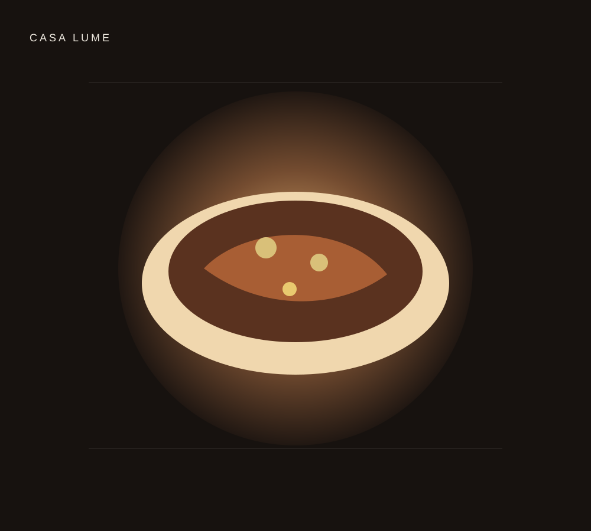
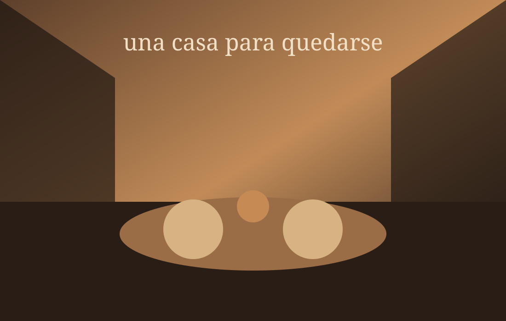

Pan de masa madre
Manteca ahumada · sal de hierbas
$ 6.800
BUENOS AIRES · 2026COCINA DE ESTACIÓN · PALERMO
Una casa abierta a la ciudad. Producto local, fuego, vino y una carta que cambia con lo que trae cada estación.
Encontrá tu mesa ↗En Lume cocinamos sin disfrazar. Elegimos pocos ingredientes, los tratamos con respeto y dejamos que el tiempo haga el resto.
La carta nace cada semana alrededor de productores de cercanía: huerta, pesca, carnes y quesos.
PRODUCTO · FUEGO · ESTACIÓNUn comedor cálido, madera, piedra y una barra para quedarse después de la última copa.

Av. Thames 1842 · Palermo, Buenos Aires
Miércoles a sábado · 19:30 — 00:30